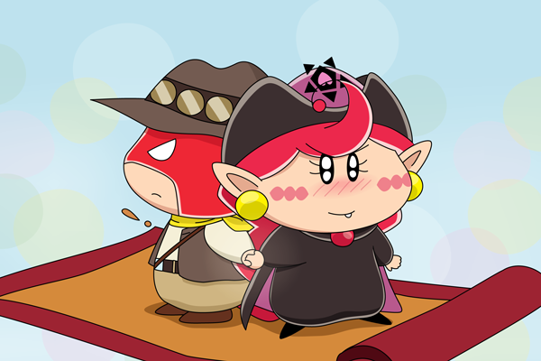

１０月はラトアク強化月間（梨璃さん制定）・・・ということで、私もラトアク絵に挑戦してみました。微妙にアクラトな感じがしますが、それは気にしない…。
ごおるでんではアクミはダアク様命だったので、ラトアクは公式では成立しないCPですね。だけどダアク様以上に一緒にいる時間の長かったラットという相棒も、気になる存在であったはず。
アクミ「こいつとだったらこれからも上手くやっていけるかも。
ってなんでアタイはラットと手をつないでんだーー！？」
ラット「ん？男とまともに手をつなげないとは
アクミもまだまだガキということだな」
アクミ「アタイがガキなわけねーだろ？
こういうことだってできるんだから！」
この後の展開は皆様のご想像にお任せします(笑)。
(2013/10/15)